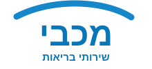
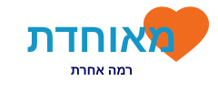

✚
רפואת משפחה
רפואה ראשונית, מעקב וליווי רפואי.
במרכז מוריה לרפואת הקהילה בחיפה נפגשים רופאים מומחים, רופאי משפחה ואנשי מקצוע רפואיים ממגוון תחומים — במרפאה אחת, עם גישה אישית וקהילתית.
המרכז לרפואת הקהילה מוריה הוא מרפאה רב-תחומית בחיפה. לצד רפואת המשפחה פועלים במרפאה רופאים ורופאות מתחומי מומחיות שונים ואנשי מקצוע רפואיים נוספים.
אפשר לפנות לרופאים באופן עצמאי או באמצעות הפניה, בהתאם לתחום השירות ולהסדרי הקבלה. אנחנו מאמינים ברפואה מקצועית, נגישה וקשובה, במסגרת קהילתית.
פעילות המרכז נשענת גם על צוות משרד ומזכירות מסור, המהווה חלק בלתי נפרד מהמרפאה ומסייע למטופלים להגיע לשירות המתאים להם, תוך יחס אישי, אכפתיות ומקצועיות.
 קהילה · שותפות · מקצועיות · הקשבה
קהילה · שותפות · מקצועיות · הקשבההכירו את תחומי השירות ואת אנשי המקצוע הפועלים במרפאה.
רפואה ראשונית, מעקב וליווי רפואי.
ייעוץ, מעקב ושירותי בריאות האישה.
בירור, אבחון וטיפול במגוון מצבים רפואיים.
ייעוץ וטיפול בתחום בריאות הנפש.
בדיקות וייעוץ בתחום רפואת העיניים.
ייעוץ בתחום מחלות ריאה בילדים.
ייעוץ בתחום מחלות זיהומיות.
ייעוץ בתחומים כירורגיים ואורתופדיים.
ייעוץ תזונתי מקצועי.
שירותי המרפאה ניתנים במספר מסלולים. ההסדרים משתנים בין אנשי הצוות ובין השירותים.

רבים מרופאי המרפאה, ובפרט רופאי המשפחה, מקבלים מטופלי מכבי במסגרת הקופה.

חלק מאנשי הצוות מקבלים מטופלים במסגרת מאוחדת.
חלק מאנשי הצוות מקבלים מטופלים במסגרת כללית מושלם, בהתאם לרופא ולשירות.
ייעוצים ושירותים רפואיים נוספים ניתנים במסגרת פרטית.
מומלץ לברר מול המרפאה את אפשרויות הקבלה, הזכאות והתשלום לפני קביעת התור.
ריכזנו תשובות לשאלות שעולות לעיתים קרובות לפני קביעת תור. אם לא מצאתם את המידע שחיפשתם, נשמח לעזור בטלפון.
עדיין יש לכם שאלה? אנחנו כאן לעזור.
התקשרו למרפאה · 04-8340280הכירו את הרופאות, הרופאים ואנשי המקצוע במרכז מוריה, קראו על תחומי העיסוק והניסיון שלהם ומצאו את השירות המתאים לכם.
לפרטים על השירותים, בירור הסדרי קבלה ותיאום תורים — מוזמנים ליצור קשר עם המרפאה.
ראשון–חמישי: 08:00–13:00, 15:00–18:30
שישי: 08:00–12:00
מומלץ להתקשר לאישור שעות הפעילות לפני ההגעה.